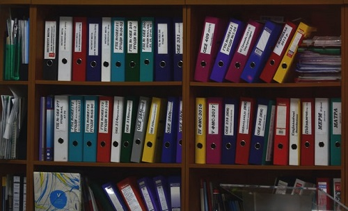
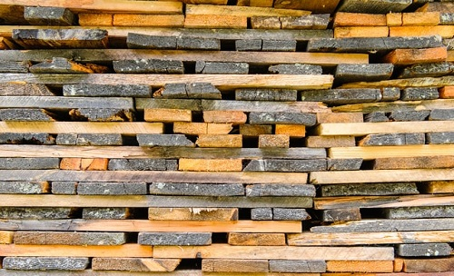
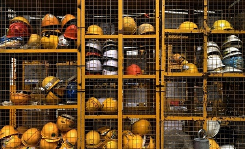
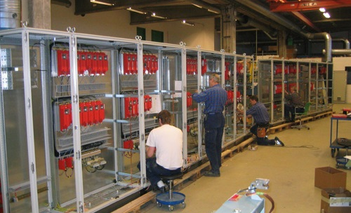
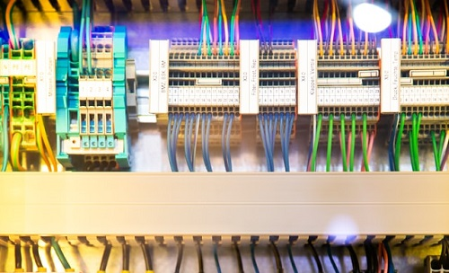

Welcome to
An electro-technical company specializing in industrial automation
An electro-technical company specializing in industrial automation
We deliver complete system solutions for all types of industries. In addition we provide consultancy services for electrical project work, electrical construction, programming, operations and service. Nolyx is not tied to one supplier. We review each project and choose the equipment that is best suited to this project with regard to total economy and operational functionality. We have many reference clients where quality management and operational functionality aspects where a key factor in the selection process. Nolyx is widely experienced in the total automation process from project planning to operational both for the Nordic and European markets. We provide total atomization solutions for production/ process driven industries. Our knowledge base regarding computerized systems is second to none. Our focus market is within process automation of the Wood & Paper industries. Service and after sales service markets are also a priority for us. We realize that our work is business critical and we are quick to provide both sales and after sales service.
Projection
Using our experience we can answer for project management, planning, design, and inquiry. By getting to be involved in projects at an early stage, we can quote and deliver cost-effective solutions with high performance and quality.
Construction
We perform all types of electrical construction:
- Contact Boxes
- Switching Central
- Frequency converters
- Servo drives
- PLC-systems
- Operator panels
- HMI-systems
- Field buses
- Decentralized I/O
Saftey
Nolyx AB can offer you the following services:
- Overall project management with regard to safety
- Going through the company´s safety status
- Establishing hazard analysis
- Carrying out complete system solutions for electrical safety circuit
We have experience with different types of PLC-systems for safety applications:
- Siemens
- Pluto
Service
Service solutions can be provided with either internal manufactured equipment or other manufacturer's equipment. We provide service and trouble shooting for all types of sites and equipment. Service can be provided remotely using fixed line modems, GSM modems or the Internet.
IT-Services
We perform different IT-Services:
- Microsoft.Net
- Microsoft SQL Server
- Microsoft VB6
- Web Services
- Andriod App development
Programming
We have many years of experience with the majority of PLC-systems and operator panels:
- Siemens 1500
- Siemens 1200
- Siemens S5
- Siemens S7
- Mitsubishi Melsec A
- Mitsubishi Melsec Fx
- Mitsubishi Melsec Q
- Allen Bradley
- Modicon
- Omron
- Hitachi
- Telemecanique
We have experience with different types of field buses:
- Profibus-DP
- ASI-network
- Ethernet
- Profinet
- Different forms of serial communication
Scada/HMI system:
- Siemens WinCC
- Wonderware Intouch
Bundle line
- SCA Stoke - 2013Bundle line
- Palfab Timber - Levene Såg AB - 2009Bundle line
- UPM Kymmene - Zao Pestovo Novo - 2008Bundle line
- Kontiotuote OY - 2007Bundle station
- Forsa Trä AB - 2006Bundle-line
- Västerdala Träkomponenter AB - 2006Bundle-line
- Moelven Treinteriör AS - 2003Bundling with shrink film
Finger jointing line
- Martinssons - 2020Finger jointing line
- Moelven Langmoen - 2012Finger jointing line
- Alvdal Skurlag AS - 2007Finger jointing line
- Ringalm Tre AS - 2006Finger jointing line
- Haslestad Bruk AS - 2005Finger jointing line
Planingline
- Kurekss SIA - 2020Planingline
- Gefle Wood AB - 2020Cup measurement
- Valbo Trä AB - 2020Bundle line
- Valbo Trä AB - 2019Planingline 1
- NWP - Hissmofors - 2019Pack machine Planingline
- Hollandse Houtimport - 2019Planingline
- Svenska Fönster AB - 2018Rebuilding of Planingline
- Sveden Trä - Rågsveden - 2018PLC change Planingline
- Valbo Trä AB - 2018Planingline 3
- SCA Timber Supply LTD - 2018Rebuilding Planingline
- Möre Tre AS - 2017Planer infeed
- Siljan Wood Products AB - 2017PLC change Planingline
- Setra - Skutskär - 2016Planingline
- Kurekss SIA - 2016Rebuilding of Planingline
- Nørlund Træ A/S - 2016Planingline Rosgrade
- Siljan Wood Products AB - 2015Rebuilding of Planingline
- NWP - Hissmofors - 2015Incjet printer Planingline
- SCA Timber AB - Jämtlamell - 2015Label applicator Planingline
- NWP - Hissmofors - 2015Pack lift & Automatic foil roller
- Moelven Notnäs AB - 2014Rebuilding of Planingline
- Moelven Langmoen AS - 2014Rebuilding of Planingline
- Ringalm Tre AS - Brumund Sag - 2014Rebuilding of Planingline
- Moelven Österdalsbruket AS - 2014PLC change Planingline
- NK Lundströms Trävaror AB - 2014Planer infeed
- Nørlund Træ A/S - 2014Stop time report Planingline
- Fegens Sågverk AB - 2013Registration Planing line
- Nørlund Træ A/S - 2013Planingline
- Stangeskovene AS - Björnstad Bruk - 2013Rebuilding of Planingline
- NWP - Hammerdal - 2013PLC-change Planingline
- SCA Timber Supply LTD - 2013Planingline
- NWP - Hissmofors - 2013Label applicator Planingline
- Sveden Trä AB - 2012Registration Planing line
- Kuusisto Group - 2011Planingline
- NWP - Hissmofors - 2011Rebuilding of Planingline
- Moelven Valåsen AB - 2011Rebuilding of Planingline
- TräTeam Br.Nyberg AB - 2011Rebuilding of Planingline
- Siljan Wood Products AB - 2010Planingline
- AS Rait - 2010Rebuilding of Planingline
- Versowood OY - 2009Planingline
- Åshammars Hyvleri & Trävaru AB - 2009Planingline
- Stora Enso - Stora Timber Amsterdam - 2009Rebuilding of Planingline
- Rågsvedens Såg AB - 2009Rebuilding of Planingline
- TräTeam Br.Nyberg AB - 2009Rebuilding of Planingline
- Van Wessem Houtbewerking - 2008Planingline
- Alvdal Skurlag AS - 2008Planingline
- Arbor Forest Products - 2008Planingline 1 Vaco
- Arbor Forest Products - 2008Planingline 2 Ledermac
- Edsbyns Hyvleri AB - 2008Rebuilding of Planingline
- Moelven Österdalsbruket AS - 2008Rebuilding of Planingline
- Lauta OY - 2008Planingline
- SCA Timber AB - Jämtlamell - 2008Planingline
- Kurekss SIA - 2007Planingline
- Levene Såg AB - 2007Planingline
- Moelven Valåsen AB - 2007Planingline
- Moelven Våler AS - 2007Planingline
- Setra Trävaror AB - Valbo - 2007Rebuilding of Planingline
- NWP - Hissmofors Såg - 2007Planer infeed
- UPM Kymmene - Zao Pestovo Novo - 2006Planingline
- M.H Southern & CO Ltd - 2006Planingline
- Moelven Soknabruket AS - 2006Planingline
- Carl Rundberg AB - 2006Planingline
- Anaika Components OY - 2006Beam Planingline
- Stora Enso Timber Ltd - Alytus AS - 2006Rebuilding of Planingline
- AB Karl Hedin - Karbenning - 2006Planingline
- AB Lundquist & Lindroth - 2005Planingline
- Anaika Components OY - 2005Beam Planingline
- BSW Newbridge - 2005Planingline
- Stangeskovene AS - Björnstad Bruk - 2005Planingline
- Balcas Esti AS - 2005Planingline
- AS Rait - 2005Rebuilding of Planingline
- Södra Timber AB - Värösågen - 2005Planingline
- Stora Enso Timber Ltd - Alytus AS - 2005Rebuilding of Planingline
- Pintopuu OY - 2005Planingline
- Balcas Timber Ltd - 2005Planer infeed
- Stora Enso Timber Ltd - Näpi Saeveski - 2004Planingline
- Moelven Österdalsbruket AS - 2004Planer infeed
- AB Lundquist & Lindroth - 2004Moving Planingline
- Junnikkalan Saha OY - 2004Planingline
- Ringalm Tre AS - Naeroset - 2004Planer infeed
- Rågsvedens Såg AB - 2003Planingline
- Moelven Notnäs Wood AB - 2003Planingline
- MCM Timber OY - 2003Planingline
- Stora Enso Timber Ltd - Kiteen Saha - 2003Planingline
- Glennon Bros Ltd - 2003Rebuilding of Planingline
- Hamina Veistosaha OY - 2003Planingline
Dry-sortingline
- AB Hilmer Andersson - 2020Dry-sortingline
- ELE Trävaru AB - 2019Pack infeed and Tilthoist
- Moelven Våler AS - 2018Rebuilding of Dry- sortingline
- Eidskog Stangeskovene AS - Vikodden Bruk - 2018Dry-sortingline packaging
- ELE Trävaru AB - 2018Tilthoist in Dry- sortingline
- Balungstrands Sågverk AB - 2017Dry-sortingline
- AS Laesti - 2016Dry-sortingline
- Balungstrands Sågverk AB - 2016Dry-sortingline
- Moelven Våler AS - 2015Rebuilding of Dry-sortingline
- Liareds Trävaror AB - 2015Rebuilding of Dry-sortingline
- Balungstrands Sågverk AB - 2015Dry-sortingline packaging
- Moelven Våler AS - 2014Rebuilding of Dry- sortingline
- Kharovsklesprom LCC - 2013Dry-sortingline
- Liareds Trävaror AB - 2012Dry-sortingline
- Amur Forest - 2009Moving of Dry sorting line
- JSC Lesosibirsky Ldk No1 - 2008Dry-sortingline
- Moelven Våler AS - 2007Dry-sortingline
- Taylormade Timber Products Ltd - 2006Dry-sortingline
- Svegs Såg AB - 2006PLC-change Dry-sortingline
- HMS Holz Hagenow - 2004Dry-sortingline Centre
- HMS Holz Hagenow - 2004Dry-sortingline Board
- Hamina Veistosaha OY - 2003Dry-sortingline
Resawline
- NWP - Hissmofors Såg - 2019Resawline
- Hasås AS - 2019Resawline
- Flaen Sag & Høvleri AS - 2015Resawline
- Forestar S.A. - 2013Stacker Resaw line
- Forestar S.A. - 2012Resaw line
- InnTre AS - 2010Resawline
- Åshammars Hyvleri & Trävaru AB - 2009Resawline
- Törnträ AB - 2008Resaw line
- Stangeskovene AS - Björnstad Bruk - 2006PLC-change Resawline
- Åshammars Trä AB - 2006Resaw sidepusher
- Moelven Van Severen AS - 2003Resawline
- Stora Enso Timber Ltd - Kotka Sawmill - 2003Resaw- and Bundle-line
Sorting line combi
- Red October - 2017Rebuilding of Sorting line combi
- Karl Segerström AB - 2017PLC change Sorting line combi
- Red October - 2015Rebuilding of Sorting line combi
- Nørlund Træ A/S - 2013Sorting line combi
- Red October - 2012Sorting line combi
- Karl Segerström AB - 2010Sorting line combi
- MCM Timber OY - 2003Dry- and Greensortingline
Painting line
- Valbo Trä AB - 2019Rebuilding Painting line
- Sveden Trä - Träkomponenter - 2017PLC change Painting line
- Siljan Wood Products AB - 2016Painting line
- Brandens AB - 2013 Painting line
- Västerdala Träkomponenter AB - 2011Registration Painting line
- Västerdala Träkomponenter AB - 2009Painting line
Stacker
- Moelven Granvin Bruk AS - 2013Stacker
- Versowood OY - 2008Stacker
- Land Sag AS - 2007PLC-change Stacker
- Valbo Trä AB - 2007Stacker
- Kährs Trävaru AB - 2006Stacker
- Berneck Aglomerados SA - 2006Stacker
- Ringalm Tre AS - Brumund Sag - 2005Stacker
- NWP - Hissmofors - 2005Stacker
- BSW Carlise - 2005Stacker and Packoutfeed
- Valbo Trä AB - 2005Stacker
- Forsa Trä AB - 2004Stacker
Boiler
- Saxwerk AB - Martinssons - 2020Solid fuel boiler
- Biogas Arla Gotland - 2020Steam boiler
- Siljan Timber AB - 2019Chip boiler
- Saxwerk AB - Siljan Timber AB - 2018Solid fuel boiler
- Saxwerk AB - Gällö Timber AB - 2017Solid fuel boiler
- Saxwerk AB - Hedlunds Timber - 2016Solid fuel boiler
- Forestia AS - 2015Particle board factory, Solid fuel boiler
Butt-End Reducer
- Bruks AB - Metsä Wood - 2020Butt-End Reducer
- Bruks AB - Taylormade Timber Products - 2020Butt-End Reducer
- Bruks AB - Fegens Sågverk AB - 2019Butt-End Reducer
- Bruks AB - Derome AB - 2018Butt-End Reducer
- Bruks AB - Beasley Forest Products - 2018Butt-End Reducer
- Bruks AB - Laird Logs - 2017Butt-End Reducer
- Bruks AB - BSW - 2016Butt-End Reducer
- Bruks AB - Bodafors Trä - 2015Butt-End Reducer
- Bruks AB - UPM Kymmene Seikun Saha - 2015Butt-End Reducer
- Bruks AB - Häberlein GmbH - 2015Butt-End Reducer
- Bruks AB - Grayson Lumber Corporation - 2015Butt-End Reducer
- Bruks AB - Spanish Trail Lumber Company - 2014Butt-End Reducer
- Bruks AB - 2013Butt-End Reducer
Greensortingline
- Älgsjö Såg AB - 2018Rebuilding of Greensortingline
- Kuusisto Group - 2018Trimmer in Greensortingline
- John Gordon & Son Ltd - 2018Rebuilding Greensortingline
- Barrus AS - 2016Rebuilding of Greensortingline
- Vida Wood AB - Nössemark - 2016Greensortingline
- Barrus AS - 2015Rebuilding of Greensortingline
- Bergene Holm - Kirkenaer - 2015PLC change Greensortingline
- Rörvik Timber - Linghem AB - 2015Greensortingline
- NWP - Sikås - 2015PLC change Greensortingline
- Moelven Våler AS - 2014PLC change Greensortingline
- Barrus AS - 2012Rebuilding of Greensortingline
- John Gordon & Son Ltd - 2012Greensortingline
- Kharovsklesprom LCC - 2012Greensortingline
- Bergs Timber AB - 2011Greensortingline
- Älgsjö Såg AB - 2011Rebuilding of Greensortingline
- Swedspan Orla - 2011Greensortingline
- Norrfog AB - 2010Greensortingline
- AB Rundvirke - 2009Greensortingline
- Barrus AS - 2008Greensortingline
- Rågsvedens Såg AB - 2006Greensortingline
- Tvärskog Timber AB - 2006PLC-change Greensortingline
- Toftan Sawmill AS - 2003Greensortingline
Sticker Stacker/Robot
- Plyfa Plywood AB - 2020Sticker Stacker
- Kurekss SIA - 2020Sticker-stacker with Stick-robot
- Kuusisto Group - 2019Stick-robot
- AS Laesti - 2018Registration Sticker-stacker
- Schilliger - 2018Stick-robot
- AS Laesti - 2017Sticker-stacker
- Balungstrands Sågverk AB - 2015Sticker-stacker with Stick-robot
- Östanåsågen AB - 2015Stick-robot
- AB Karl Hedin - Säters Ångsåg - 2015Rebuilding of Sticker-stacker
- Balungstrands Sågverk AB - 2012PLC-change Sticker-stacker
- Karl Segerström AB - 2010Sticker-stacker with Stick-robot
- BSW Carlisle - 2010Sticker-stacker
- JSC Lesosibirsky Ldk No1 - 2008Sticker-stacker with Stick-robot
- Setra - Horndals Sågverk - 2008Sticker-stacker
- Land Sag AS - 2008Stick-robot
- ELE Trävaru AB - 2007Sticker-stacker with Stick-robot
- Myllyahon Saha OY - 2007Sticker-stacker with Stick-robot
- Eidskog Stangeskovene AS - 2007Stick-robot
- Fegens Sågverk AB - 2007Rebuilding of Stick-robot
- Rågsvedens Såg AB - 2004Stick-robot
- MCM Timber OY - 2003Sticker-stacker with Stick-robot
- Vida AB - Niab Timber AB - 2003Rebuilding of Stick-robot
- Tvärskog Timber AB - 2003 Stick-robot
Safety
- Östanåsågen AB - 2019Safety Greensortingline
- Älgsjö Såg AB - 2014Safety Greensortingline
- Sveden Trä - Rågsvedens Såg - 2014Safety Planingline
- Älgsjö Såg AB - 2014Safety Dry-sortingline
- Iggesund Holmen Group - 2014Safety equipment
- Setra - Färila Sågverk - 2013Safety equipment Sticker-stacker
- Sveden Trä - Dala Floda Golv - 2013Safety equipment
- Karl Segerström AB - 2012Safety equipment Kombiline
- NWP - Hammerdal - 2012Safety equipment Planingline
- Setra - Färila Sågverk - 2012Safety equipment
- NWP - Östavall - 2012Safety equipment
- Setra - Horndals Sågverk - 2011Safety equipment
- Levene Såg AB - 2011Safety equipment Planingline
- TräTeam Br.Nyberg AB - 2011Safety equipment Planingline
- Södra Timber AB - Värösågen - 2010Safety equipment Planingline
Other
- Forestia AS - 2017Particle board factory
- Forestia AS - 2017 Particle board factory
- NWP - Hissmofors Såg - 2017 Balningslinje
- Södra Timber AB - Värösågen - 2016Forklift stick handling
- Best Engineering - Mindsource IKEA - 2016
- Bruks AB - BWSC Cramlington - 2016Fuel handling
- Bruks AB - Göterborgs Energi - 2015Fuel handling
- Forestia AS - 2015Particle board factory, Filter system
- Maximalfönster i Åshammar AB - 2014 Profile storage
- Bruks AB - Falu Energi - 2011Chipper
- Svegs Såg AB - 2011Package Press
- Catech AB - Gordon Timber - 2011PLC change Edger optimizer
- Bruks AB - 2010Barking machine
- Stora Enso Timber Ltd - Kiteen Saha - 2010 Finscan Endspy
- Moelven Dalaträ AB - 2009Rebuilding of pack outfeed
- Bruks AB - Byggkultur AB - 2009 Chipper
- Aven Forsa AB - 2009Pack infeed and strapping
- Versowood OY - 2009Saw-line, Pool-line
- Anaika Components OY - 2006Re-sticking line
- Exte AB - 2006Welding machine
- Stangeskovene AS - Eidskog Bruk - 2005Pack outfeed
- Moelven Langmoen AS - 2005Listline
- Kontiotuote OY - 2005Endmatching
- Moelven Edanesågen AB - 2004Package Press
- Haslestad Bruk AS - 2004Stickbox handling
Xylon
Recording and sorting system for Drysorting, Greensorting and Planing lines
Product sheetRead more
Hide
Xylon
Nolyx offers up to date technics, a user-friendly HMI interface with a flexible system for small as well as large lines. Our support is our strongest trademark, and we take the overall responsibility. Xylon includes one supplier for machine control and sorting, we create package files for office systems, import of Run orders and Sort table, communication with office system, measuring of deceleration time, input of article register, production measuring, handling of run order, recipe handling, report handling and sort guarding.
Measuring and Crosscutting
Within measuring and crosscutting Xylon provide wane measuring device, thick measuring, module crosscutting, convex measuring, exact crosscutting, length measuring, width measuring, free crosscutting and trimmer control.
Flexible handling of emptying
With Xylon the possibility to automatically or manually merge small packages, simply handle editing and handle sort change exist.
Automatic Package information
Automatic package information involves package queue from sorting information to the stacker, press/strapping, wrapping and bolster.
Contact us for more information!
Xylon Remote
Android application for Remote control. Used with Xylon for Manual Driving
Product sheetRead more
Hide
Ett modernare sätt att styra utrustning
Xylon Remote är en Android-app som tillåter manuellkörning av industriutrustning med Xylon på en modern och universel plattform. Appen ger märkbart snabbare tillgång till manuellkörning och ett effektivare arbetsflöde.
Säkert och familjärt
Xylon Remote fortsätter leverera samma säkerhetsstandarder som tidigare utrustning. Appen berättar när den är från- och uppkopplad mot en Xylon-server och låser funktioner om fel uppstår vid uppkoppling.
Gränssnittet är tydligt, responsivt, och lätt att lära sig. Även nybörjare kan komma igång på nolltid!
Kraftpaket i fickformat
Xylon Remote kan köras på alla Android-enheter och levereras på en stryktålig telefon från CAT. Telefonen är snabb, reptålig, damm -och vattentät, och får enkelt plats i din ficka!
Enkel support och felsökning
Android-ekosystemet tillåter smidig support och felsökning, Vår administratörpanel ger möjlighet till snabba modifikationer av appens utseende om så skulle behövas.
Kontakta oss för mer information!
Tomas Wennberg
Phone: 070 508 81 45 tomas.wennberg@nolyx.se
Mikael Haglund
Phone: 070 508 81 43 mikael.haglund@nolyx.se
Christer Sörell
Phone: 070 508 81 49 christer.sorell@nolyx.se
Roger Pettersson
Phone: 070 508 81 47 roger.pettersson@nolyx.se
Norra Järnvägsgatan 23A SE-827 31 Ljusdal noly@nolyx.se Phone: +46 651 133 61
Jobba hos oss
Är du en person som vill resa? Är du en person som vill möta nya människor? Är du en person som gillar dagliga utmaningar? Är du en person som vill ha ett fritt jobb där eget ansvar prioriteras? Är du en person som vill jobba på ett spännande teknikföretag? Är du en person som som har tankar på att flytta till en mindre ort med djur och natur nära intill?
Då kan du vara den automationstekniker som Nolyx AB letar efter!
Gammal eller ung, rutinerad eller nyexaminerad.... det spelar ingen roll. Det viktigast är att du har en drivkraft att utveckla dig själv och företaget, samt att du är en lagspelare.
Ansökan: Beskriv dig själv och skicka ditt CV till tomas.wennberg@nolyx.se